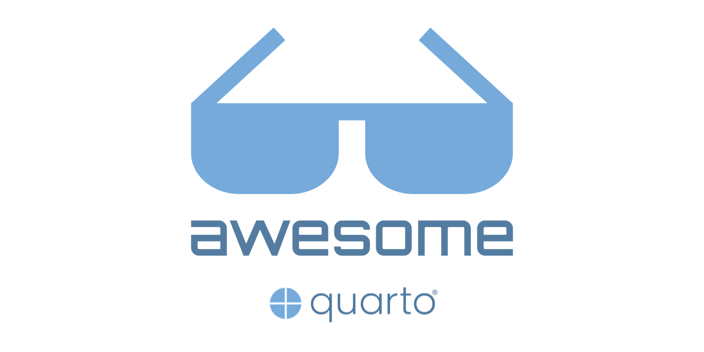
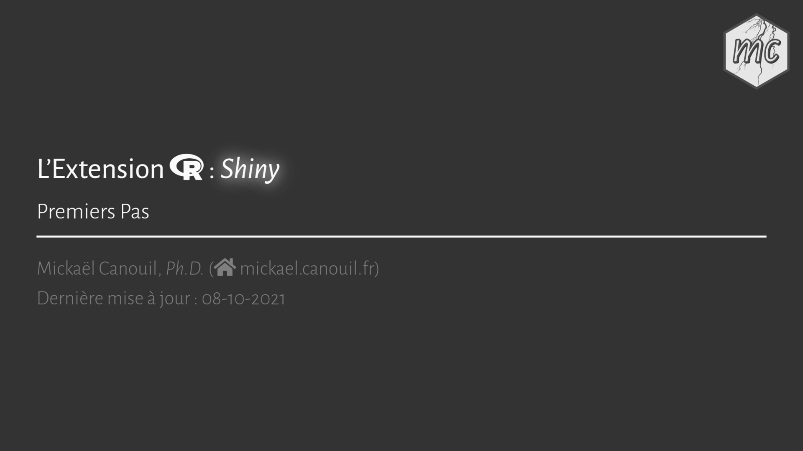
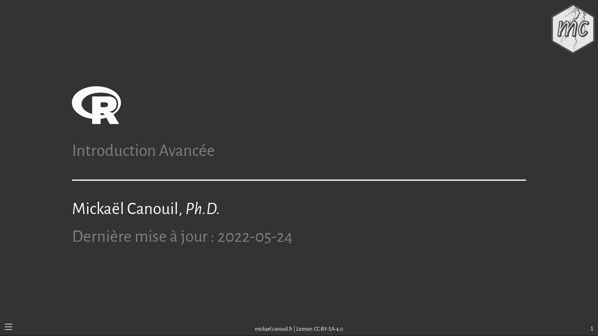
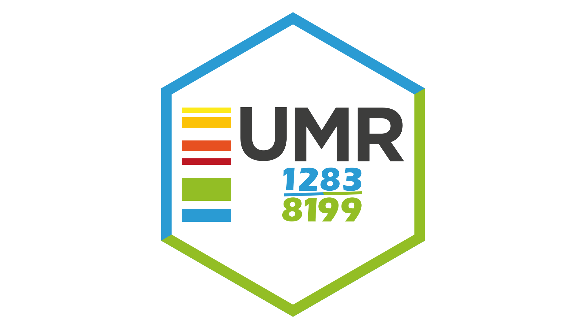
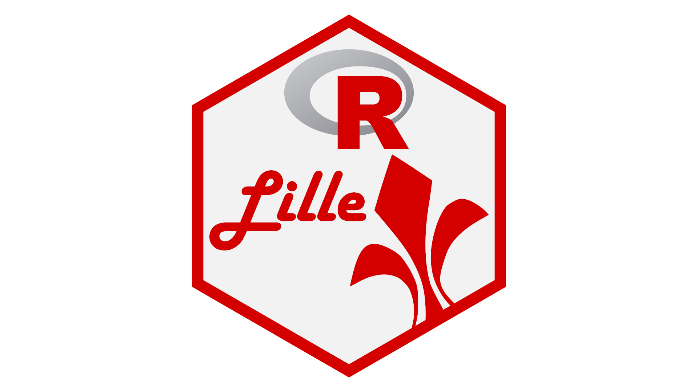
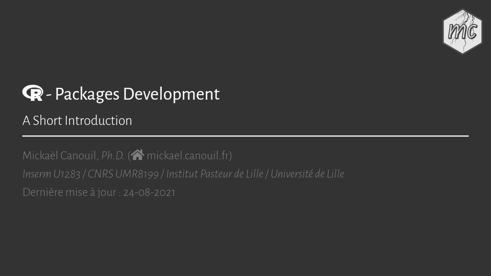
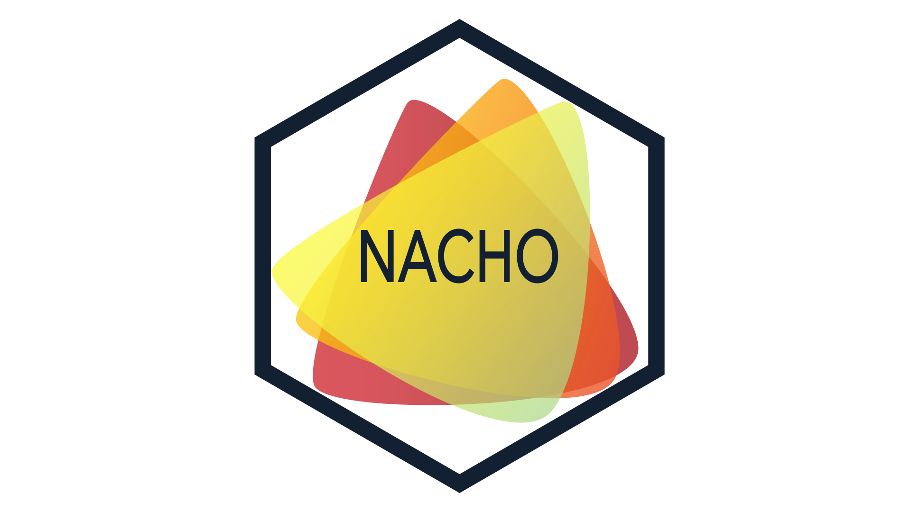
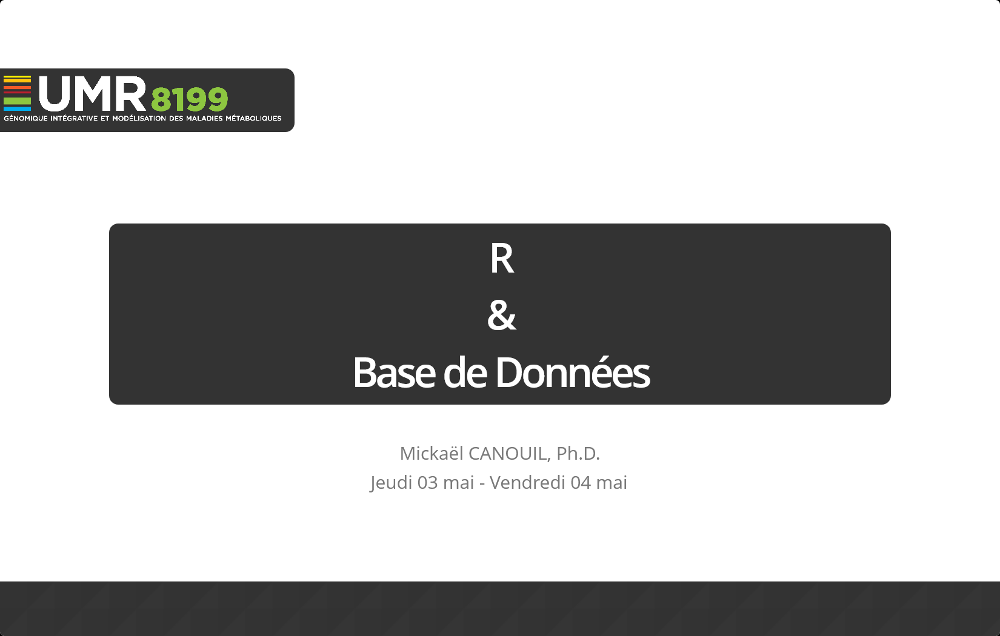

ggplot2
gganimate

An R package to create the project structure within the Inserm U1283 / CNRS UMR 8199 unit.

R Lille is an R User Group (RUG) located in Lille, France. R Lille is part of the Meetup RUG network sponsored by the R Consortium.

A user-friendly interface, using Shiny, to analyse glucose-stimulated insulin secretion (GSIS) assays in pancreatic beta cells or islets.
Test for association between a set of SNPS/genes and continuous or binary outcomes by including variant characteristic information and using (weighted) score statistics. MiSTr is an improvement of the MiST outputs.
MiSTr
MiST

A shiny-based dashboard to load, visualise and normalise the exported NanoString nCounter data and facilitates the user in performing a quality control.
